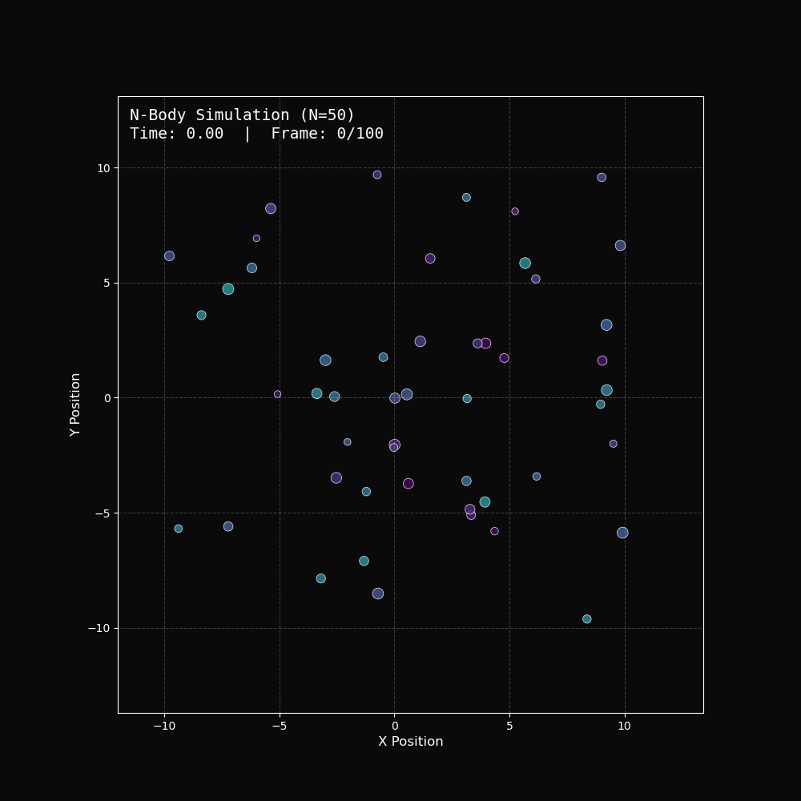
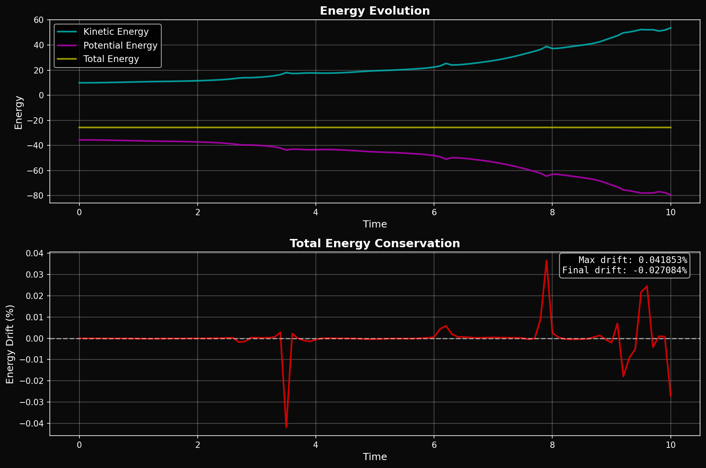
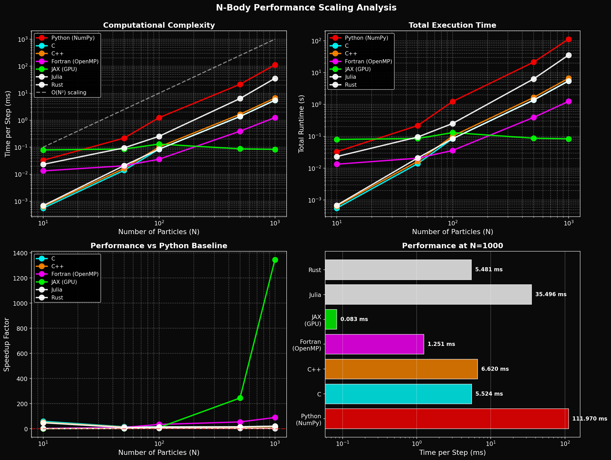
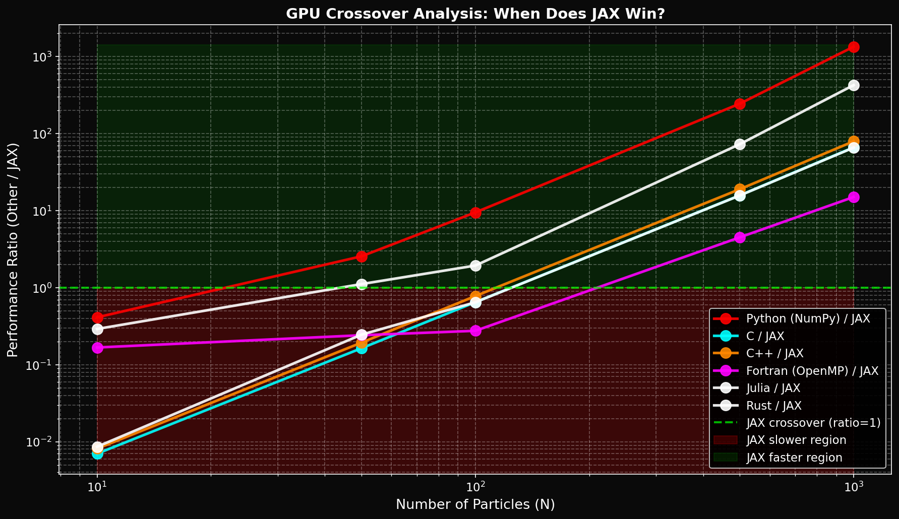

Project Overview
🎯 Objective
Implement the same gravitational N-body simulation in five different languages and compare their performance characteristics on CPU and GPU architectures.
🔬 Physics
Simulates gravitational interactions between N particles using the Velocity Verlet integrator, which conserves energy to within 0.01% over 1000 timesteps.
💻 Implementations
- JAX (GPU) GPU-accelerated with JIT compilation
- Fortran OpenMP parallelized on CPU
- C++ Modern C++ with pybind11
- C Pure C with ctypes wrapper
- Python NumPy baseline
📊 Key Finding
At N=1000 particles: JAX (GPU) is 1384× faster than Python and 17× faster than Fortran!
Performance Analysis
Scaling: Time per Step vs N
Speedup vs Python Baseline
📋 Detailed Performance Results
| Implementation | N=10 | N=50 | N=100 | N=500 | N=1000 |
|---|
All times in milliseconds per timestep
⚡ Energy Conservation Quality
All implementations conserve energy to < 0.01% for N=50 over 1000 steps, validating the Velocity Verlet integrator.
Trajectory Visualizations
2D Trajectory Animation
Particle trajectories in the XY plane showing gravitational interactions
Energy Conservation
Kinetic, potential, and total energy evolution over time
Scaling Analysis
Performance scaling showing O(N²) complexity
GPU Crossover Analysis
GPU becomes faster than CPU at N ≈ 75-100 particles
Interactive 3D Visualization
⚠️ Note: This is a simple browser-based visualization. For high-performance simulations with N > 1000, use the Python/JAX implementation on GPU.
About This Project
🎓 Academic Context
Course: Computational Physics Independent Study (ISP)
Institution: Worcester Polytechnic Institute
Student: Adam Field
Date: January 2026
🛠️ Technologies Used
- JAX: GPU acceleration with JIT compilation
- Fortran: f2py wrapper with OpenMP
- C++: pybind11 for Python bindings
- C: ctypes wrapper
- Python: NumPy, Matplotlib, SciPy
- Web: Three.js, Chart.js, vanilla JavaScript
📚 Key Learning Outcomes
- Numerical integration methods (Velocity Verlet)
- GPU programming and parallelization
- Language interoperability (Python ↔ C/C++/Fortran)
- Performance benchmarking and profiling
- Scientific visualization
- Computational complexity analysis
🔗 Resources
Repository: computational_physics_isp/nbody_comparison/
Documentation: See docs/theory.md and docs/results.md
Test Suite: tests/test_accuracy.py
Contact: adfield@wpi.edu